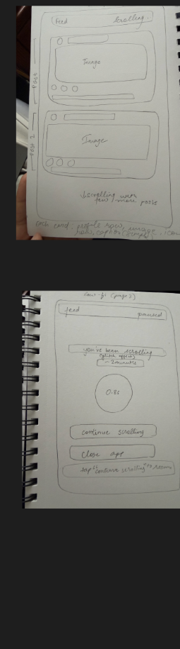
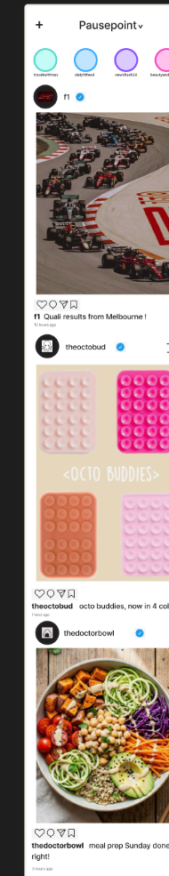
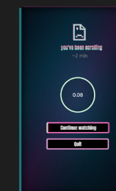

Individual class project · Interaction design · Figma · p5.js
Pausepoint
I designed Pausepoint to bring a moment of awareness into endless scrolling. A familiar social feed leads to a checkpoint that asks the viewer to decide whether to continue or quit.
Open live project ↗The starting point
How can a familiar scrolling interface make someone notice the time they spend in it? I explored a pause screen as a deliberate interruption.
From sketch to interaction
I developed hand-drawn layouts and Figma screens for the feed and checkpoint, then built an interactive prototype in p5.js. The two choices make the moment of decision visible.
What this work explores
The prototype explores timing, visual feedback, and user choice. It is a class experiment; its effect on scrolling habits has not been measured.
On paper.
Then on screen.


